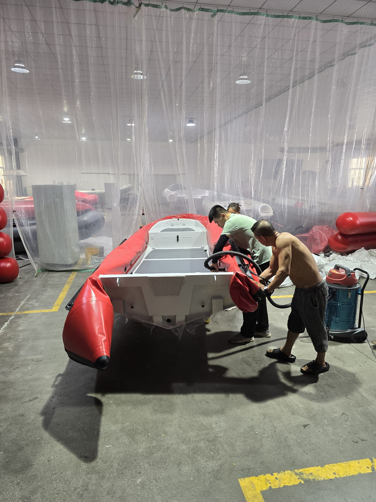

Model FG-01
Fiberglass Boat
Premium hull strength and stability — ideal for recreational and light commercial use.
High-quality fiberglass boats designed for durability, performance, and marine excellence.
Premium hull strength and stability — ideal for recreational and light commercial use.
Designed with a spacious deck for comfort, fishing, and long marine trips.
Extra layered fiberglass for maximum durability in harsh water conditions.
Smooth finishing and modern styling — combining performance and aesthetics.
Excellent wave-handling ability — engineered for stability and speed.
Versatile design suitable for transport, fishing, and recreational activities.
Tailor-made fiberglass boat options available for OEM and private clients.